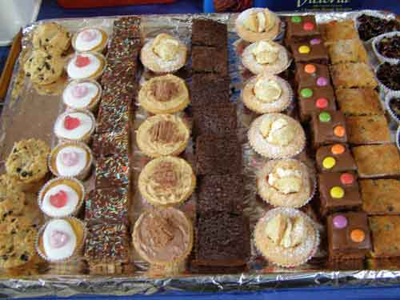
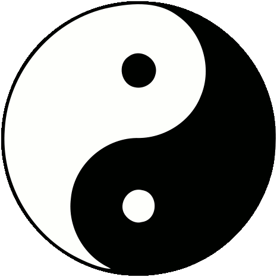
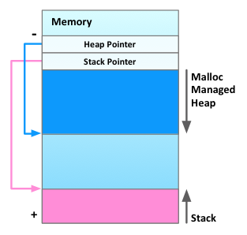
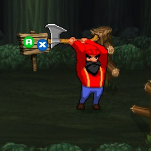
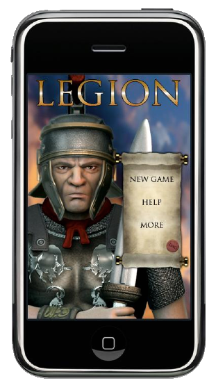
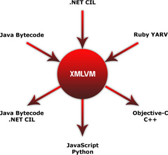
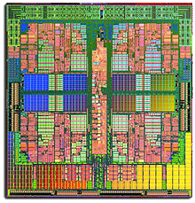

The State of JavaScript
Brendan Eich / Strange Loop 2012

A very brief history
- Ten days in May 1995: “Mocha”
- September 1995: “LiveScript”
- December 1995: “JavaScript”
- 1996-1997: ECMA-262 Ed. 1, aka ES1
- 1999: ES3: modern JS baseline
- 2005: the Ajax revolution
- 2008: ES4 RIP, Harmony founded in July
- 2009: ES5: “use strict”, JSON, Object.create, etc.
- 2012: ES6 under way: modules, let, proxies, etc.
JS: Wat
Wat Secrets Revealed
js> {} + []
0
Wat Secrets Revealed
js> {}
js> + []
0
js> + ''
0
Wat Secrets Revealed
js> ({} + [])
"[object Object]"
Wat Secrets Revealed
js> {} + {}
NaN
Wat Secrets Revealed
js> {}
js> + {}
NaN
js> + '[object Object]'
NaN
Wat Secrets Revealed
js> ({} + {})
"[object Object][object Object]"
Wat Secrets Revealed
js> Array(16).join()
",,,,,,,,,,,,,,,"
Wat Secrets Revealed
js> Array(16).join().length
15
Wat Secrets Revealed
js> 'wat' - 1
NaN
ES6 is coming
(JS evolves along with the rest of the web standards)
ECMAScript Edition 6
Official goals: a better language for
- applications
- libraries
- code generators
ECMAScript Edition 6
Official goals: a better language for
- applications
- libraries
- code generators
Classes?!
No class
Maximally Minimal Classes
class SkinnedMesh extends THREE.Mesh {
constructor(geometry, materials) {
super(geometry, materials);
this.identityMatrix = new THREE.Matrix4();
this.bones = [];
this.boneMatrices = [];
...
}
update(camera) {
...
super.update();
}
}
Instead of this mess
function SkinnedMesh(geometry, materials) {
SkinnedMesh.__super__.constructor
.call(this, geometry, materials);
this.identityMatrix = new THREE.Matrix4();
this.bones = [];
this.boneMatrices = [];
...
}
__extends(SkinnedMesh, THREE.Mesh)
SkinnedMesh.prototype.update = function (camera) {
...
SkinnedMesh.__super__.update.call(this);
}
Modules
module FastMath {
export function sin() { /*...*/ }
export function cos() { /*...*/ }
}
import {sin, cos} from FastMath;
import $ from "http://js.com/jquery/1.8.1/jquery-min.js";
Symbols
const cloneSym = new Symbol();
// Symbol names are guaranteed not to collide
Object.defineProperty(Object.prototype, cloneSym, {
value: function () {
// universal cloning code unobtainium here
}
});
var twin = obj[cloneSym]();
Private Symbols
module Branding {
const brandSym = new Symbol(); // not exported
export function brand(obj, mark) {
if (!obj.hasOwnProperty(brandSym))
obj[brandSym] = mark;
}
export function hasBrand(obj, mark) {
return obj[brandSym] === mark;
}
}
Symbol Syntax
public @clone;
Object.defineProperty(Object.prototype, @clone, {
value: function () {
// universal cloning code unobtainium here
}
});
var twin = obj.@clone();
Private Symbol Syntax
module Branding {
private @brand; // not exported
export function brand(obj, mark) {
if (!obj.hasOwnProperty(@brand))
obj.@brand = mark;
}
export function hasBrand(obj, mark) {
return obj.@brand === mark;
}
}
Private in Max/Min Classes
class SkinnedMesh extends THREE.Mesh {
private @identityMatrix,
@bones,
@boneMatrices;
constructor(geometry, materials) {
super(geometry, materials);
this.@identityMatrix = new THREE.Matrix4();
this.@bones = [];
this.@boneMatrices = [];
...
}
...
}
Symbol Utilities
// Internal string name, for debugging and diagnostics
const myPublicSymbol = new Symbol("my public symbol");
// Binding initializers for renaming and full control
private @score = importedSharedSecrets.@score;
Lots of other goodies
Default parameters
js> function f(a = 0, b = a * a, c = b * a) {
return [a, b, c];
}
js> f()
[0, 0, 0]
js> f(2)
[2, 4, 8]
js> f(2, 3)
[2, 3, 6]
js> f(2, 3, 4)
[2, 3, 4]
Rest parameters
js> function f(a, b, ...r) {
print(Array.isArray(r));
return r.concat(a, b);
}
js> f(1, 2)
true
[1, 2]
js> f(1, 2, 3)
true
[3, 1, 2]
js> f(1, 2, 3, 4, 5)
true
[3, 4, 5, 1, 2]
Spread
js> a = [3, 4, 5]
[3, 4, 5]
js> b = [1, 2, ...a]
[1, 2, 3, 4, 5]
js> function f(...r) { return r; }
js> function g(a) { return f(...a); }
js> g(a)
[3, 4, 5]
for-of, Iterators & Generators
js> for (var v of [1, 2, 3]) {
print(v)
}
1
2
3
No Default Iterator
js> for (var [k, v] of {p: 3, q: 4, r: 5}) {
print(k, v)
}
typein:24:0 TypeError: ({p:3, q:4, r:5}) is not iterable
Custom Iteration
js> Object.defineProperty(Object.prototype, @iterator, {
value: function () {
var obj = this;
var keys = Object.keys(obj);
var i = 0;
return {
next: function () {
if (i == keys.length) throw StopIteration;
var key = keys[i++];
return [key, obj[key]];
}
};
}
});
js> for (var [k, v] of {p:3, q: 4, r: 5}) print(k, v);
p 3
q 4
r 5
Generators FTW
js> function* items(o) { // in ES6 standard library
for (var k in o) {
yield [k, o[k]];
}
}
js> for (var [k, v] of items({p:3, q: 4, r: 5})) {
print(k, v);
}
p 3
q 4
r 5
Generator as Default Iterator
js> Object.defineProperty(Object.prototype, @iterator, {
value: items
});
js> for (var [k, v] of {p:3, q: 4, r: 5}) print(k, v);
p 3
q 4
r 5
Callback Hell
load("config.json",
function(config) {
db.lookup(JSON.parse(config).table, username,
function(user) {
load(user.id + ".png", function(avatar) {
// <-- you could fit a cow in there!
});
}
);
}
);
Promises Purgatory
load("config.json")
.then(function(config) {
return db.lookup(JSON.parse(config).table);
})
.then(function(user) { return load(user.id + ".png"); })
.then(function(avatar) { /* ... */ });
Shallow Coroutine Heaven
import spawn from "http://taskjs.org/es6-modules/task.js";
spawn(function* () {
var config = JSON.parse(yield load("config.json"));
var user = yield db.lookup(config.table, username);
var avatar = yield load(user.id + ".png");
// ...
});
Comprehensions
// Using depth-first search and constraint propagation,
// try all possible values.
function search(values) {
if (!values)
return false; // Failed earlier
if (all(values[s].length == 1 for (s in squares)))
return values; // Solved!
// Choose unfilled square s with fewest possibilities
let a = [values[s].length + s for (s in squares)
if (values[s].length > 1)]
.sort();
let s = a[0].slice(-2);
return some(search(assign(values.copy(), s, d))
for (d in values[s]));
}
Map
js> var objkey1 = {toString: function(){return "objkey1"}}
js> var objkey2 = {toString: function(){return "objkey2"}}
js>
js> var map = Map([[objkey1, 42], [objkey2, true]])
js> map.get(objkey1)
42
js> map.get(objkey2)
true
js> assert(!map.has("objkey1") && !map.has("objkey2"))
Map set & get
js> map.set(objkey1, 43)
js> map.get(objkey1)
43
Map iteration, size
js> map.set("stringkey", "44!")
js> for (var [k, v] of map) {
print(k, v)
}
objkey1 43
objkey2 true
stringkey 44!
js> map.size()
3
Map cycles
js> map.set(objkey2, objkey1)
js> map.set(objkey1, objkey2)
js> for (var [k, v] of map) {
print(k, v)
}
objkey1 objkey2
objkey2 objkey1
stringkey 44!
Map delete
js> map.delete(objkey1)
true
js> map.delete(objkey2)
true
js> for (var [k, v] of map) {
print(k, v)
}
stringkey 44!
js> map.size()
1
Set
js> var set = Set([1, true, "three"])
js> set.has(1)
true
js> set.has(2)
false
js> for (var e of set) {
print(e)
}
1
true
three
js> set.size()
3
Set delete, iteration
js> set.delete("three")
true
js> for (var e of set) {
print(e)
}
1
true
js> set.size()
2
js> set.add("three")
js> set.size()
3
Set add, has
js> var four = {toString: function(){return '4!'}}
js> set.add(four)
js> set.has(four)
true
js> for (var e of set) {
print(e)
}
1
true
three
4!
WeakMap
js> var wm = WeakMap()
js> wm.set(objkey1, objkey2)
js> wm.set(objkey2, objkey1)
js> wm.has(objkey1)
true
js> wm.get(objkey1)
({toString:(function (){return "objkey2"})})
js> wm.has(objkey2)
true
js> wm.get(objkey2)
({toString:(function () {return 'objkey1'})})
WeakMap, not LeakMap
js> gc()
"before 286720, after 282720\n"
js> objkey1 = null
null
js> wm.get(objkey2)
({toString:(function () {return 'objkey1'})})
js> objkey2 = null
null
js> gc()
"before 286720, after 282624\n"
Proxy
js> var MethodSink = Proxy({}, {
has: function(target, name) { return true; },
get: function(target, name, receiver) {
if (name in Object.prototype) {
return Object.prototype[name];
}
return function(...args) {
return receiver.__noSuchMethod__(name, args);
}
}
});
Default __noSuchMethod__
js> Object.defineProperty(
Object.prototype,
'__noSuchMethod__',
{
configurable: true,
writable: true,
value: function(name, args) {
throw new TypeError(name + " is not a function");
}
}
);
Using __noSuchMethod__
js> var obj = {
foo: 1 ,
__proto__: MethodSink,
__noSuchMethod__: function(name, args) {
return name;
}
}
js> obj.foo
1
js> obj.bar()
"bar"
js> obj.toString
function toString() {
[native code]
}
Proxying __noSuchMethod__
js> obj.bar
(function (...args) {
return receiver.__noSuchMethod__(name, args);
})
js> var thunk = obj.bar
js> thunk()
"bar"
ECMAScript Edition 6
Official goals: a better language for
- applications
- libraries
- code generators
Why compile to JS?
 – lightweight syntax, conveniences
– lightweight syntax, conveniences
 – macros, uniform data abstraction (incl. DOM)
– macros, uniform data abstraction (incl. DOM)
- – pattern matching, types
- – security, isolation
- – synchronous style events
- More at altjs.org
We had always thought that Java's JVM would be the VM of the web, but it turns out that it's JavaScript. JavaScript's parser does a more efficient job... than the JVM's bytecode verifier.
JS > bytecode
- Dynamic typing ⇒ no verification
- Type inference ⇒ delayed optimization
- Would bytecode compress as well?
- Bytecode standardization would suck
- Bytecode versioning would suck more
- Low-level bytecode is future-hostile
- Many humans like writing JS
One JS, for humans and computers
Example: goto
function f() {
L0:
g();
L1:
if (p)
goto L0;
o.m();
goto L1;
}
goto considered...
- Compilers: yes please!
- Humans: DO NOT WANT
Better: proper tail calls
function f() {
function L0() {
g();
return L1(); // goto with arguments
}
function L1() {
if (p)
return L0(); // goto with arguments
o.m();
return L0(); // goto with arguments
}
return L0(); // goto with arguments
}
Cool story.
But compared to native...
NaCl?
- Impressive engineering
- Driving competition
- Not portable
- Defined by implementation
- No view source
JS can sandbox, too
Low-Level JavaScript
function void swap(int *a, int *b) {
let int tmp = *a;
*a = *b;
*b = tmp;
}
let int x = 1, y = 2;
swap(&x, &y);
console.log(x, y);
LLJS Memory Model

The last missing VM feature...
Won't be missed...
class AbstractSingletonProxyFactoryBean {
/** @type Object It's an object! */
private Object bean;
}
Typed arrays
var a = new Uint32Array(1024);
for (var i = 0, n = a.length; i < n; i++) {
a[i] = i * i;
}
Typed objects
// a user-defined type
var Point = struct({
x: uint32,
y: uint32
});
var origin = new Point(0, 0);
console.log(origin.x); // 0
console.log(origin.y); // 0
The last missing JS feature...
Macros?
macro def {
case $name:ident $params $body => {
function $name $params $body
}
}
def sweet(a) {
console.log("Macros are sweet!");
}
Sweet!
- Hygienic macros for JS, inspired by Scheme & Racket
- Breakthrough: a sound JS reader (no full parsing)
- See sweetjs.org (github)
- By Tim Disney (UCSC) with Paul Stansifer (Northeastern), Dave Herman (Mozilla)
- Maybe for ES7 -- it could happen!
- Pull requests accepted -- please help us
More games!
Cross-Compile XNA
Cross-Compile Android
 Parallelism!
River Trail
pixelData.map(toGrayScale)
.map(function(color) {
return [color,color,color,255]; // new pixel
})
PJS: Parallel JavaScript
var tasks = rows.map(function(row, i) {
return fork(render, [row, i]); // fork a subtask
});
oncompletion(function() {
var images = tasks.map(function(task) {
return task.get(); // get subtask result
});
display(images);
});
Conclusion
The Web is the Platform
- JS is the web's “virtual machine”
- Compilers: productivity, performance, portability
- Evolving a better JS for people and compilers